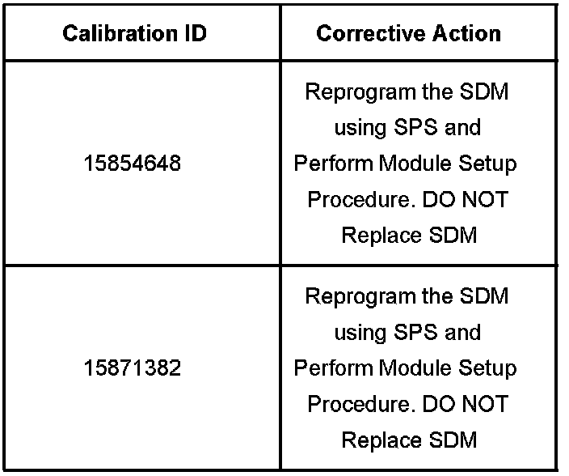
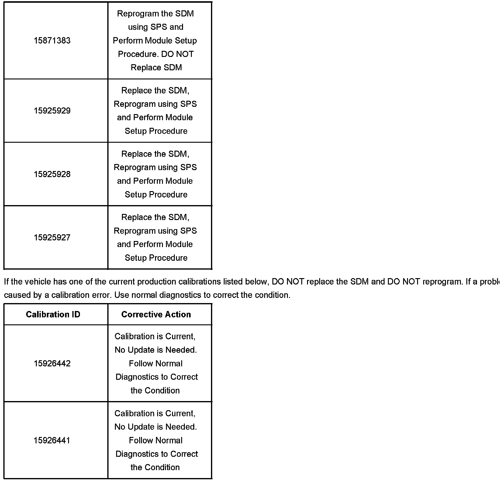
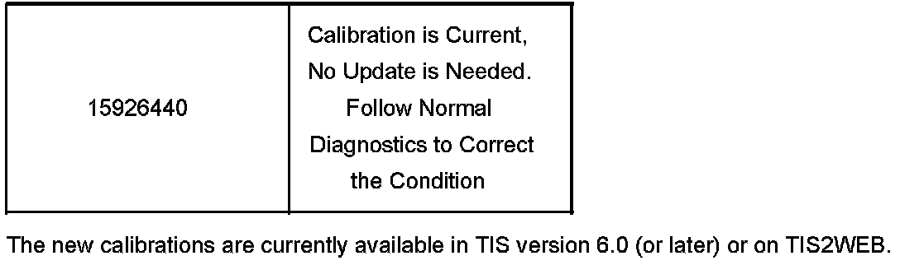
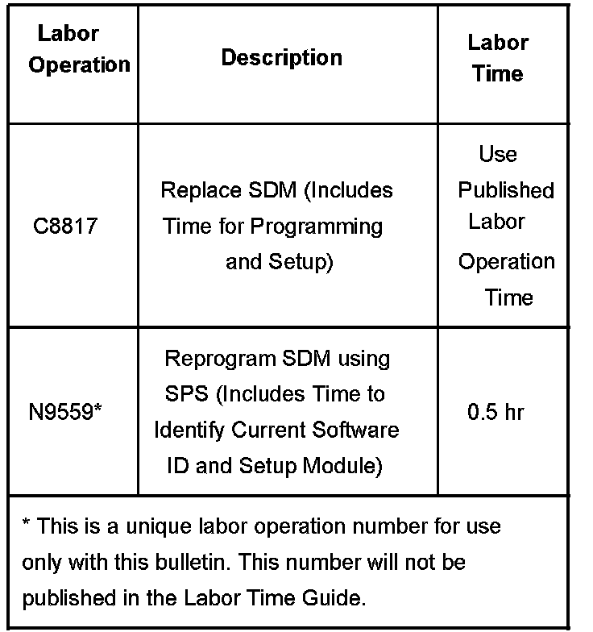

<!DOCTYPE html>
<html>
  <head>
    <title>Restraints - Pass. Seat Belt Lamp ON/After Remote Start — 2007 Cadillac Escalade ESV AWD V8-6.2L Service Manual | Operation CHARM</title>
    <meta name='description' content="Detailed repair manual for the 2007 Cadillac Escalade ESV AWD V8-6.2L.">
    <link rel='stylesheet' href="../../../../../../style.css">
    <meta name='viewport' content='width=device-width, initial-scale=1.0' />
  </head>
  <body>
    <div class='theme-colors header'>
      <div class='branding'><b>Operation CHARM</b>: Car repair manuals for everyone.</div>
<div class=breadcrumbs><a class='breadcrumb-part' href="../../../../../../">Home</a> <b>&gt;&gt;</b> <a class='breadcrumb-part' href="../../../../../../Cadillac/">Cadillac</a> <b>&gt;&gt;</b> <a class='breadcrumb-part' href="../../../../../../Cadillac/2007/">2007</a> <b>&gt;&gt;</b> <a class='breadcrumb-part' href="../../../../../../index.html">Escalade ESV AWD V8-6.2L</a> <b>&gt;&gt;</b> <a class='breadcrumb-part' href="../../../../../../Repair%2520and%2520Diagnosis/index.html">Repair and Diagnosis</a> <b>&gt;&gt;</b> <a class='breadcrumb-part' href="../../../../../../Repair%2520and%2520Diagnosis/index.html#Restraints%20and%20Safety%20Systems/">Restraints and Safety Systems</a> <b>&gt;&gt;</b> <a class='breadcrumb-part' href="../../../../../../Repair%2520and%2520Diagnosis/index.html#Restraints%20and%20Safety%20Systems/Air%20Bag%20Systems/">Air Bag Systems</a> <b>&gt;&gt;</b> <a class='breadcrumb-part' href="../../../../../../Repair%2520and%2520Diagnosis/Restraints%2520and%2520Safety%2520Systems/Air%2520Bag%2520Systems/Technical%2520Service%2520Bulletins/index.html">Technical Service Bulletins</a> <b>&gt;&gt;</b> <a class='breadcrumb-part' href="../../../../../../Repair%2520and%2520Diagnosis/Restraints%2520and%2520Safety%2520Systems/Air%2520Bag%2520Systems/Technical%2520Service%2520Bulletins/index.html#All%20Technical%20Service%20Bulletins/">All Technical Service Bulletins</a> <b>&gt;&gt;</b> <a class='breadcrumb-part' href="index.html">Restraints - Pass. Seat Belt Lamp ON/After Remote Start</a></div></div>
<div class='main'>
<h1>Restraints - Pass. Seat Belt Lamp ON/After Remote Start</h1>Bulletin No.: 06-09-40-002<br><br>Date: July 13, 2006<br><br>TECHNICAL<br><br>Subject:<br>Passenger Safety Belt Reminder Light Remains On After Remote Start (Perform Appropriate Corrective Action Below))<br><br>Models:<br>2007 Cadillac Escalade, Escalade ESV, Escalade EXT<br>2007 Chevrolet Avalanche, Suburban, Tahoe<br>2007 GMC Yukon, Yukon XL, Yukon Denali, Yukon Denali XL <br><br>with Remote Start (RPO AP3)<br><br>Condition<br><br>Some customers may comment that the passenger safety belt reminder light remains on with the passenger seatbelt buckled after a remote start.<br><br>Cause<br><br>This condition may be caused by a software anomaly within the SDM.<br><br>Correction<br><br><div class='oxe-image'></div><br><br><br><h3>��S:</h3><div class='oxe-image'></div><br><br><br><div class='oxe-image'></div><br><br><br><br><span class='indent-5'>&#09;</span>It is important that you first identify the calibration number that is in the SDM. This can be done using the Tech 2(R) and requesting module ID. The calibration number will determine if the SDM calibration can be updated or if the SDM will need to be replaced before the new calibration can be installed. Use the table's shown to identify the proper corrective action that is required.<br><br><span class='indent-5'>&#09;</span>If the vehicle has one of the current production calibrations listed below, DO NOT replace the SDM and DO NOT reprogram. If a problem still exists, it is not caused by a calibration error. Use normal diagnostics to correct the condition.<br><br><span class='indent-5'>&#09;</span>The new calibrations are currently available in TIS version 6.0 (or later) or on TIS2WEB.<br><br>Warranty Information<br><br><div class='oxe-image'></div><br><br><br><br>For vehicles repaired under warranty, use only one of the labor operations shown.<br><br><div class='oxe-image'></div><br><br><br><br>Disclaimer<br></div>
<div class="theme-colors footer">
  <i>pro multis</i> · <a href="../../../../../../about.html">About Operation CHARM</a>
</div>
<script src="../../../../../../script.js"></script>
</body>
</html>
